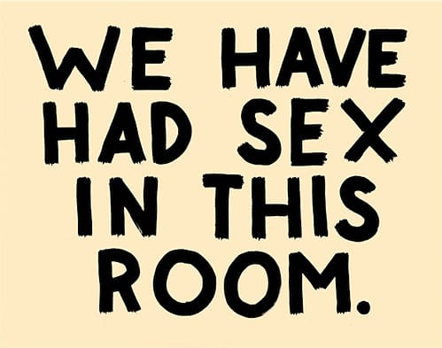

02-01-2012

О, а я помню, что первый сиди, который я купил, был фирменный “Queen — Greatest Hits II”.
Приятная какая штука. Ну и дабстеп ремикс для ценителей :)

Еще немного.
Придумал расширение для html5, типа в textarea написать content-type="markdown" и иметь некоторое количество редакторов внешних для разных типов контента. Типа, вот у меня текст в маркдауне, я на поле тапаю и держу, появляется попап и возможность выбрать внешний редактор, который умеет визивиг и другие сладости. Было бы круто и не надо было бы свой апп писать. Написал такой хендлер и зашибись, везде будет работать, где маркдаун.
К сабжу теперь надо купить коричневую куртку. До колен. Мама мне всегда говорила: Пегов, ты в этих коротких куртках себе задницу отморозишь! Я ее конечно не слушал. Теперь ее нет, а я вдруг захотел куртку до колен. Почему я ничего не могу сделать вовремя? С другой стороны, поздно лучше, чем никогда.

Неплохо вроде получилось. Enjoy! :)
Отличный трек!
Ой, какой классный альбом! А какой у этого чувака из Sigur Rós голос!